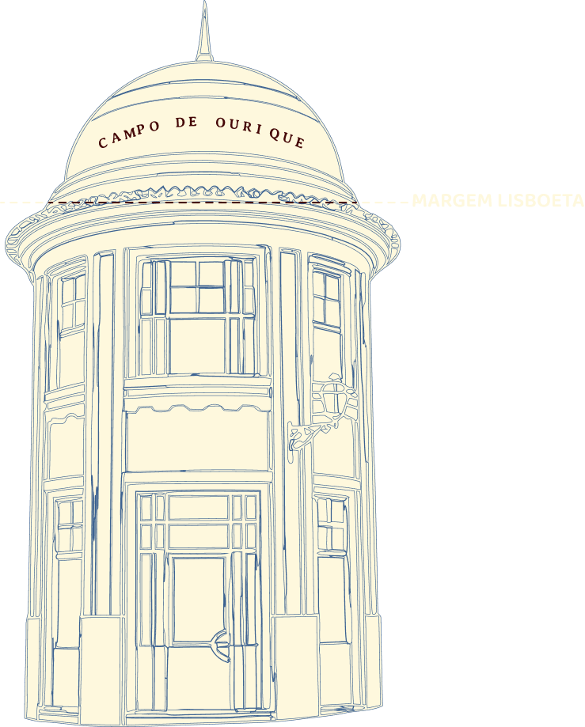

A terra tremeu e Lisboa ruiu.
Faz scroll para descer
...vinha do mar.
As águas engoliram a cidade, subindo até à colina de Campo de Ourique.
Mantém premido para a água subir. Larga exatamente na linha tracejada antes que a onda engula o bairro!
